01
Nudging
Verhalten lenken ohne Druck oder Zwang, zur richtigen Zeit im richtigen Kontext.

01 Case Studies
Adaptives Planungs- & Organisationstool · Konzept, UX/UI, Prototyp
Eine App, die fragt, warum Menschen scheitern, und psychologische Mechaniken nutzt, damit sie empathisch an ihren Routinen festhalten.

KI-Assistenz für ältere Menschen · Konzept, UX/UI, Prototyp
Ein empathischer, transparenter Assistent, der digitale Hemmschwellen abbaut und Selbstständigkeit im Umgang mit Technik stärkt.

Augmented-Reality-Lernplattform · Konzept, UX/UI, AR-Prototyp
Wissen aus Neugier entdecken, mit 3D-Modellen in Augmented Reality, Quizzen und Gamification für langfristige Motivation.

Visualisierungssystem für die Pharmaproduktion · Research & Development
Ein Visualisierungssystem, das Bedienende in der Pharmaproduktion Schritt für Schritt führt und Fehler abfängt, bevor sie Folgen haben.

Kundenprojekte für 1&1 und Vattenfall · UX Design
Screens, User Flows und Designstrukturen für Online-Shops, Kundenportale und Websites von Konzernen aus der Telekommunikations- und Energiebranche.

02 Wie ich arbeite
Ich bin Henri Löhlein, UX/UI & Product Designer. Ich arbeite an der Schnittstelle von Psychologie und Technologie: wie KI, LLMs und adaptive Systeme verändern, wie Menschen entscheiden, vertrauen und handeln. Mein Fokus liegt auf psychologisch fundierten Mechaniken, von der Research bis zum getesteten Prototyp.
Zum Kontakt01 Haltung
Lösungen folgen Bedürfnissen.
Bedürfnisse folgen Empathie.
Und Empathie folgt echtem Interesse.
Zielgerichtetes Design entsteht nur, wo Herausforderungen mit Empathie und funktionalem Denken angegangen werden. Genau dort liegt mein Ansatz.
Meine Projekte beginnen mit echtem Interesse am Problem, nicht mit einer fertigen Lösung. Aus Research und Empathie, etwa Personas, Journey Maps, Interviews und Card Sortings, leite ich psychologisch fundierte Mechaniken ab. Sie entstehen in Figma als modulare, klar hierarchisierte Systeme und werden im Usability-Testing mit echten Menschen geschärft.
03 Über mich
Digitale Interaktionen formen Entscheidungen, Gewohnheiten und Emotionen. Mich interessieren die subtilen Mechanismen dahinter, Nudging, Dark Patterns, Persuasive Design, und die Frage, wo verantwortungsvolle Gestaltung die Grenze zwischen Unterstützung und Manipulation zieht.
Neue Technologien wie KI und adaptive Systeme prägen Wahrnehmung, Vertrauen und Interaktion. Ich will verstehen, wie, und diese Bewegung mitgestalten. Meine Arbeit adressiert reale Probleme, fundiert in einem Verständnis dafür, wie Nutzer denken, handeln und fühlen.
Verhalten lenken ohne Druck oder Zwang, zur richtigen Zeit im richtigen Kontext.
Mechanismen, die Nutzer gegen ihre eigenen Interessen lenken. Verstehen, um sie zu vermeiden.
Modelle wie das Fogg Behavior Model und die Self-Determination Theory in echte Mechaniken übersetzen.
Wie LLMs, generative und adaptive Systeme Wahrnehmung und Vertrauen prägen, und wie sich diese Werkzeuge im Designprozess selbst nutzen lassen.
04 Kontakt
Adaptives Planungs- und Organisationstool
steady ist eine Planungs-App, die nicht nur Aufgaben ordnet, sondern Menschen dabei unterstützt, an Routinen und Zielen festzuhalten. Ein KI-Assistent passt Ton, Zeitpunkt und Art seiner Unterstützung an den jeweiligen Nutzertyp an und meldet sich dann, wenn es im Alltag darauf ankommt.
Planungs-Apps wie Notion oder der Kalender strukturieren Aufgaben, verändern aber kaum das Verhalten. Die Idee entstand aus eigener Erfahrung: Trotz digitaler Ordnung fiel es schwer, langfristige Ziele konsequent zu verfolgen. Gleichzeitig zeigte sich im Umfeld, wie wenig es oft braucht, damit Menschen eine Gewohnheit hinterfragen, etwa eine kurze Pause vor dem Öffnen einer App.
Daraus entstand die Frage, wie ein Planungstool bei der Umsetzung begleiten kann, ohne zu bevormunden. Ein zu strenges System erzeugt Druck, und wer sich kontrolliert fühlt, löscht die App. Mitte Mai 2025 änderte sich deshalb der Ansatz grundlegend:
Einzelne Disziplinierungsmechaniken erscheinen in festen Momenten, etwa beim Verschieben oder Löschen eines Ziels. Die Reaktion ist immer gleich, unabhängig von Tagesform und Situation, und kann belehrend wirken.
Ein KI-Assistent wird zur zentralen Steuerungsschicht. Er setzt Mechaniken wie die Erinnerung an eigene Beweggründe situativ ein, abgestimmt auf Zeitpunkt, Kontext und Nutzertyp.
Vier Modelle aus der Literaturrecherche bildeten das Fundament. Jedes wurde in eine konkrete Anforderung an die App übersetzt.
Die App soll jede Person individuell ansprechen. Intern gewichtet das System feine Dimensionen wie Motivationsstil, Strukturverhalten und Frustrationstoleranz. Im Onboarding stehen dafür nur drei verständliche Fragen.
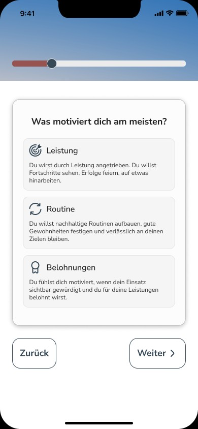
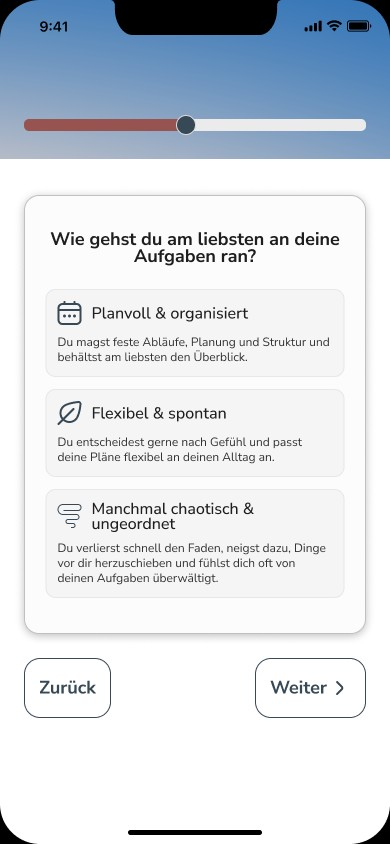
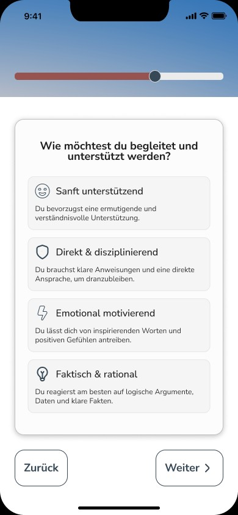
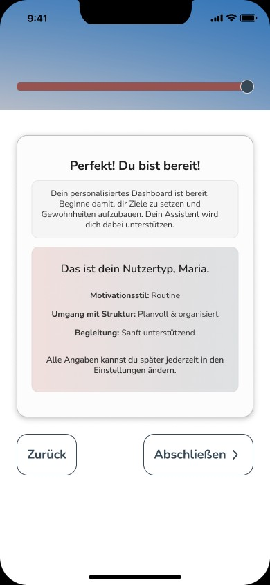
Anpassen lassen sich nur Tonalität, Zeitpunkt und Mechaniken der Unterstützung. Navigation, Oberfläche und Kernfunktionen bleiben für alle gleich, damit die App verlässlich bedienbar bleibt.
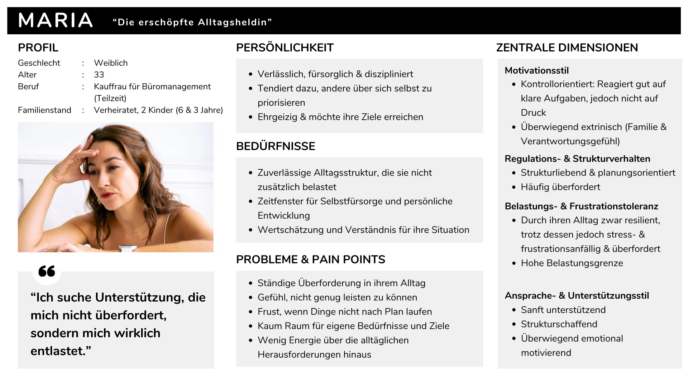
Drei Personas bilden unterschiedliche Muster ab: Maria, die erschöpfte Alltagsheldin, Anna, die strukturierte Selbstoptimiererin, und Ben, der kreative Chaot.
Personas und Journey Maps entstanden bewusst ohne Bezug zur App, um die Menschen unabhängig von einer Lösung zu verstehen. Erst die Use Cases übertrugen die Erkenntnisse auf konkrete Situationen.
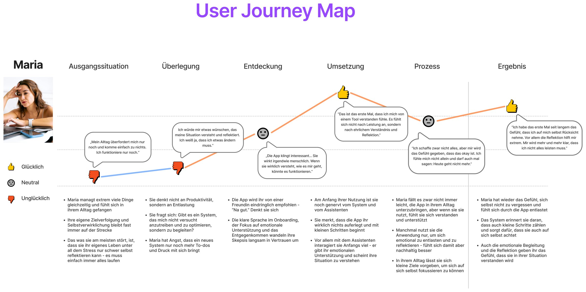
Maria möchte Yoga in ihre Routinen aufnehmen und verstehen, was es mit ihr macht. Sie zweifelt noch an der Nachhaltigkeit. Optimale Unterstützung: Reflexionsfragen wie „Was sind deine größten Ängste?“ und späteres gemeinsames Reflektieren. Sie braucht viel emotionale Begleitung.
Yoga ist dreimal die Woche im Kalender. Ihr Alltag ist oft unplanbar; fällt sie aus dem Rhythmus, kommt Frust. Optimale Unterstützung: empathische Erinnerungen, sichtbarer Fortschritt und leichtes Verfolgen der Routinen.
Der Alltagsdruck wirkt überwältigend, ein negativer innerer Monolog lähmt sie. Optimale Unterstützung: achtsame Reaktionen, Reflexionsimpulse wie „Was würdest du einer Freundin raten?“ und die Möglichkeit, Ziele zu pausieren, zu vereinfachen oder neu zu priorisieren.
Eine Intervention wirkt nur dann als Unterstützung, wenn sie zur Situation passt. Sonst wird sie als Bevormundung erlebt.
Vor dem Hi-Fi-Prototyp prüfte ein kombiniertes Card Sorting mit vier Personen zwischen 24 und 65 Jahren die geplante Struktur. Im geschlossenen Teil ordneten sie 22 Begriffe sechs App-Bereichen zu, im offenen Teil markierten sie unklare Begriffe und schlugen Alternativen vor.
Die Grundstruktur bestätigte sich. Unklar war dagegen die Trennung der Einträge: „Aufgabe“ und „Routinetask“ klangen fast gleich, und Aufgaben ließen sich keinem Bereich eindeutig zuordnen.
Aufgabe und Termin wurden zum Kalendereintrag zusammengefasst. Die drei Eintragsarten tragen im ganzen Interface eine feste Farbe und lassen sich zusätzlich über ein übergreifendes Hinzufügen-Overlay anlegen, das je nach Bereich die passende Kategorie vorauswählt.
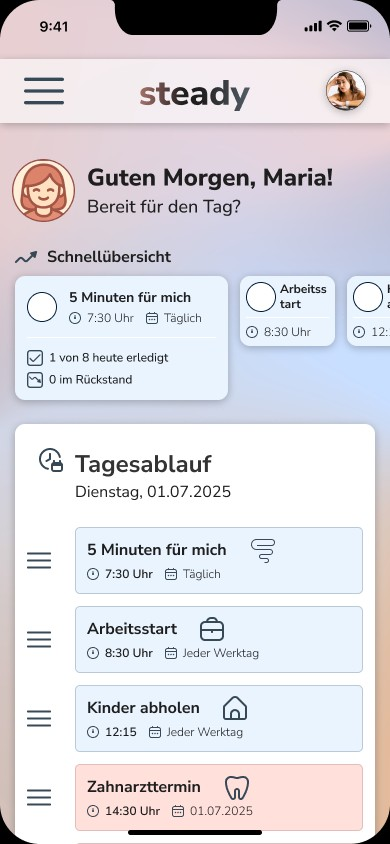
123Die Begrüßung passt sich der Tageszeit an. Im Dashboard steht der Assistent bewusst groß daneben und lädt zum Gespräch ein.
Der nächste Eintrag lässt sich direkt beim Öffnen abhaken. Darunter stehen erledigte Einträge und der Rückstand des Tages.
Einträge sind farbig nach Art getrennt, per Ziehen sortierbar und per Wischen erledigt. Einträge im Rückstand rutschen nach unten.
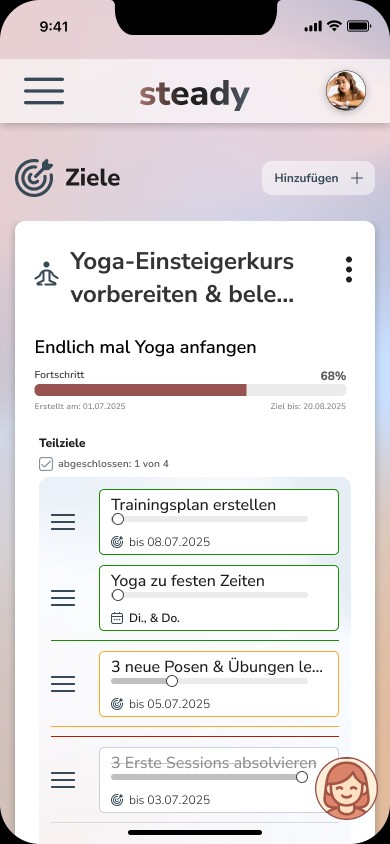
123Der Fortschritt des Hauptziels ergibt sich automatisch aus den Teilzielen. Jede Änderung zeigt sofort, was sie bewirkt.
Farbige Linien trennen die Prioritäten. Wird ein Teilziel über eine Linie gezogen, übernimmt es deren Stufe. Der Fortschritt wird per Slider in Wiederholungsschritten gesetzt.
Erledigte Teilziele wandern in die unterste Stufe und bleiben sichtbar. Der Rückblick auf das Geschaffte wirkt zusätzlich belohnend.
Außerhalb des Dashboards sitzt der Assistent als Icon unten rechts, im natürlichen Greifbereich des Daumens. Eine Seitenleiste führt zu Tagesablauf, Zielen, Kalender, Einstellungen und Hilfe.
Alle Mechaniken laufen über den Assistenten statt über eigene Overlays. Damit er nicht wie ein Pop-up wirkt, reagiert er im Prototyp zeitverzögert, etwa wenn ein Bereich geöffnet oder eine Aktion abgeschlossen wird. So entsteht der Eindruck eines Begleiters, der von sich aus da ist.
Maria verneint die Frage nach Übungen. Der Assistent schlägt vor, zwei Ziele zu pausieren, damit sie sich auf sich selbst konzentrieren kann.
Er lobt ihren Fortschritt und regt eine Nachricht an ihr Zukunfts-Ich an, die sie in einer schwächeren Phase motivieren soll.
Er fragt, warum die Woche so gut lief. Aus Marias Antwort leitet er eine Dankbarkeitsübung ab und legt auf Wunsch den passenden Eintrag an.
Auch die Wortwahl folgt dieser Haltung. Der Assistent fragt „Womit kann ich dich unterstützen?“ statt „Womit kann ich dir helfen?“ und betont damit den gemeinsamen Prozess statt eines Gefälles.
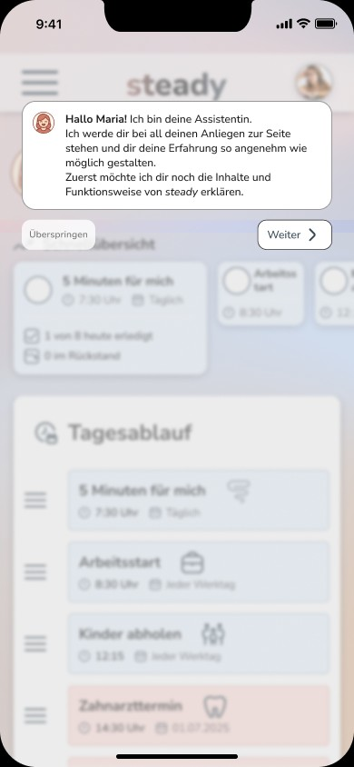
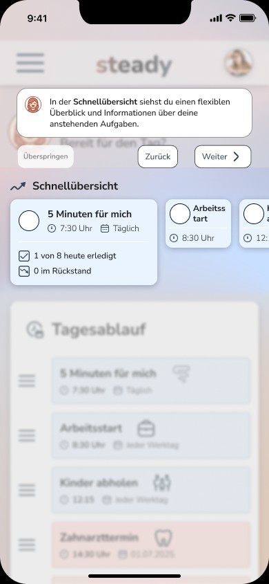
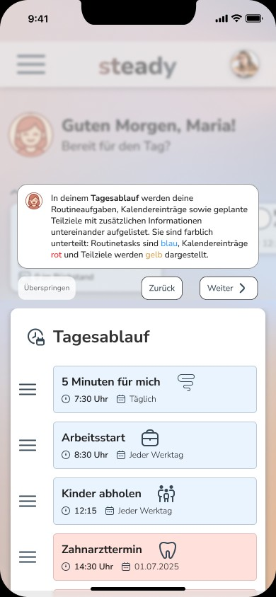
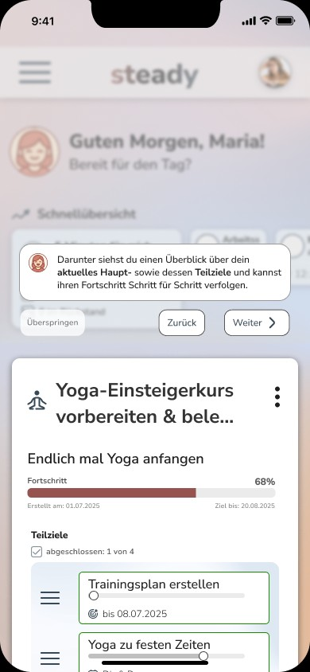
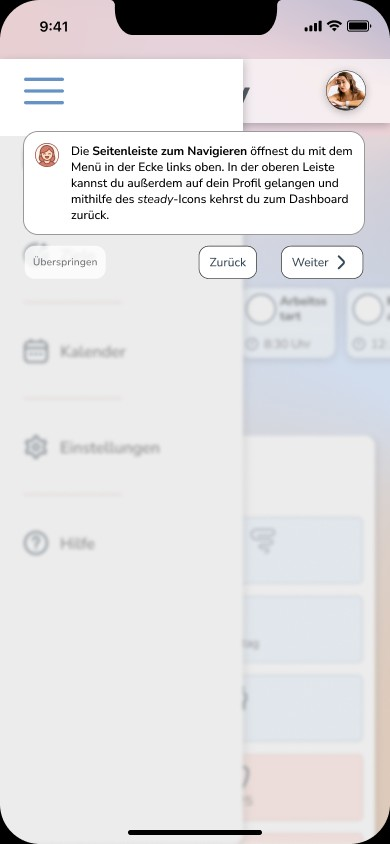
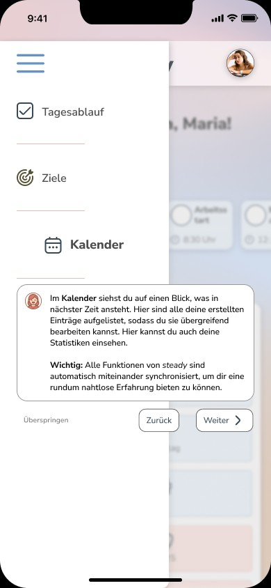
Warme Akzente in Rot und Gelb stehen für Zuwendung, Blau für Klarheit. Das Logo wurde nach Feedback aus der Betreuung kräftiger gesetzt, der Pfeil im „y“ entfiel, und es übernahm den Farbverlauf der App.
Acht Personen zwischen 22 und 65 Jahren testeten den Hi-Fi-Prototyp mit zehn Aufgaben und Fragen, fünf davon begleitet vor Ort am Smartphone, drei unbegleitet im Browser. Ausgewählt wurden sie nach Alter, Technikaffinität und Erfahrung mit Planungs-Apps.
„Die App ist einfach gehalten, dadurch kann man nicht so leicht den Überblick verlieren.“
Testperson, 26, Student
„Hilfreich, jedoch auch teils störend, da er oft ungefragt auftaucht.“
Testperson, 24, Student, über den Assistenten
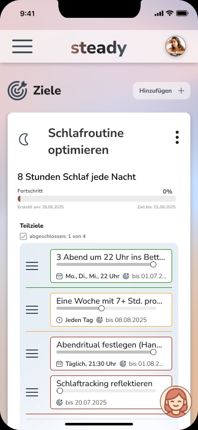
Der Kurswechsel zum Assistenten und die Umstrukturierung nach dem Card Sorting haben das Konzept erst zu dem gemacht, was am Ende getestet wurde. Beides entstand aus Rückschlägen im Prozess. Die Kritik am zu präsenten Assistenten beantwortet das Konzept selbst: Seine Aktivität ist einstellbar.
In steady passt sich nicht die Oberfläche an, sondern die Begleitung. Die Struktur bleibt verlässlich, während Ton und Zeitpunkt der Unterstützung dem Menschen folgen.
KI-Assistenz für ältere Menschen
Milo ist eine KI-basierte Assistenz, die älteren und wenig technikaffinen Menschen einen ruhigen Einstieg in künstliche Intelligenz ermöglicht. Ein zentraler Gesprächsverlauf, drei wählbare Eingabewege und konsequente Rückmeldungen sollen Unsicherheit abbauen und Selbstständigkeit stärken.
Für viele ältere Menschen liegt die größte Hürde nicht in der Bedienung, sondern im Kopf: die Angst, etwas falsch oder kaputt zu machen, Misstrauen gegenüber undurchsichtiger Technik und das Gefühl, den Anschluss verpasst zu haben. Dazu kommen nachlassende Sehkraft, Feinmotorik und Aufmerksamkeit.
Die Marktanalyse fand keine Anwendung, die eine KI-Assistenz gezielt für diese Gruppe umsetzt. Produkte wie Hallo Alfred oder GrandPad wenden sich oft zuerst an Angehörige und behandeln ältere Menschen als Nebennutzende. Das bestätigt genau das Misstrauen in ihre Selbstständigkeit, das die Nutzung erschwert.
Aus der Recherche entstanden drei Leitfragen:
Milo soll warm und zugewandt sprechen, darf aber keine Beziehung vortäuschen. Gerade für Menschen mit Einsamkeitserfahrung wäre eine KI, die sich wie ein Freund gibt, eine Form der Manipulation. Milo macht deshalb klar, dass es ein technisches Werkzeug ist, und kennzeichnet Empfehlungen als Vorschläge.
Auch das Geschäftsmodell folgt dieser Haltung: keine Werbung und ein transparent begründetes Premium-Angebot, das erst nach einiger Zeit erscheint und nicht schon bei der Registrierung.
Drei Personas decken die Spannweite von vorsichtig bis neugierig ab: Inge, die vorsichtige Alltagsbewältigerin, Karl, der skeptische Pragmatiker mit gesundheitlichen Einschränkungen, und Monika, die neugierige Entdeckerin. Der Prototyp folgt Inge, die von ihren Kindern ein Smartphone geschenkt bekam, es aber kaum nutzt.
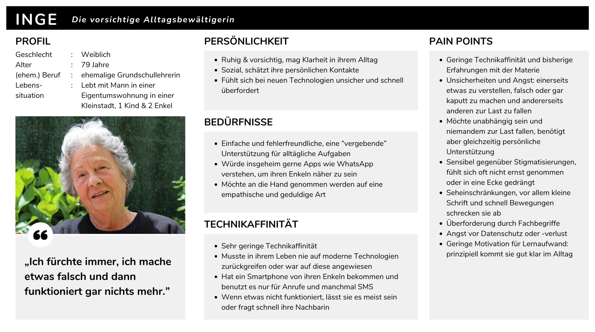
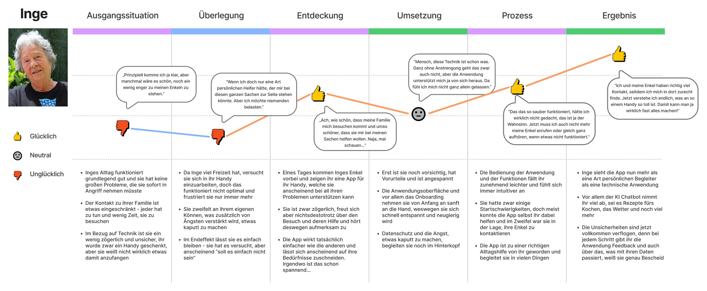
Inge will den Assistenten zum ersten Mal nutzen, weiß aber nicht, wie sie ihre Frage formulieren soll. Optimale Unterstützung: schon im Onboarding zeigen, wie man mit der KI spricht, also Starthilfe, bevor eine Hürde entsteht.
Sie schreibt „Wie wird das Wetter morgen?“ und weiß nicht, woran sie den Erfolg erkennt. Optimale Unterstützung: Antworten visuell und sprachlich eindeutig darstellen und Nachrichten der App klar als solche kennzeichnen.
Eine Rückmeldung wie „Du musst zuerst deine Ortsangabe anpassen“ lässt sie sich ohnmächtig fühlen. Optimale Unterstützung: jederzeit Kontrolle über das Gespräch und bei Unverständnis ein direkter Weg zur Hilfe.
Im Zentrum steht ein einziger Gesprächsverlauf. Viele KI-Anwendungen verlangen, Chats selbst anzulegen und zu ordnen, für die Zielgruppe eine zusätzliche Hürde. Milo sortiert besprochene Themen stattdessen in einstellbaren Abständen automatisch in vergangene Gespräche ein und meldet danach, wo sie zu finden sind. Das hält den aktiven Verlauf kurz, was auch der Antwortqualität des Sprachmodells zugutekommt.
Ein eigener Bereich „Entdecken“ für Veranstaltungen und Angebote wurde verworfen, weil er das Prinzip eines zentralen Assistenten aufgebrochen hätte. Milo schlägt solche Inhalte nun passend im Gespräch vor, etwa eine Veranstaltung in der Nähe samt Erinnerung.
Der Name ist kurz, leicht auszusprechen und ohne Geschlechtszuordnung. „Alfred“ aus der Marktanalyse wirkte vertraut, hätte dem Assistenten aber unbeabsichtigt Eigenschaften zugeschrieben. Im Onboarding lässt sich Milo umbenennen.
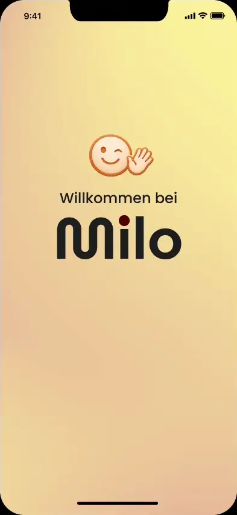
Die Willkommenssequenz entstand spät im Prozess. Im Austausch mit der Betreuung wurde deutlich, dass die Angst vor dem ersten Kontakt zwar in der Recherche stand, im Interface aber kaum adressiert war.
Alltagsnahe Bilder erklären, was eine KI leisten kann: Milo ist wie ein guter Nachbar, ein digitaler Wegweiser, ein riesiges Lexikon und ein aufmerksamer Notizzettel. Langsame Übergänge lassen Zeit zum Lesen, und schon hier wird Milo als künstliche Intelligenz benannt.
Das Onboarding führt in sechs Schritten durch Anrede, Eingabe, Ausgabe, Barrierefreiheit, Geräte sowie Datenschutz und endet mit einer Zusammenfassung, die sich noch ändern lässt. Neben dem Zurück-Pfeil gibt es immer eine beschriftete Schaltfläche, und die kleinen Fortschrittspunkte haben eine größere, unsichtbare Tippfläche.
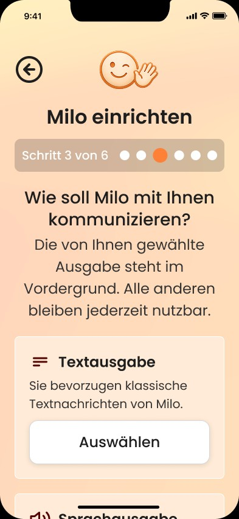
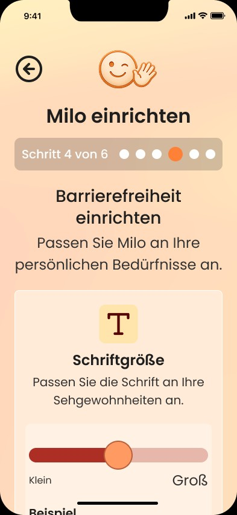
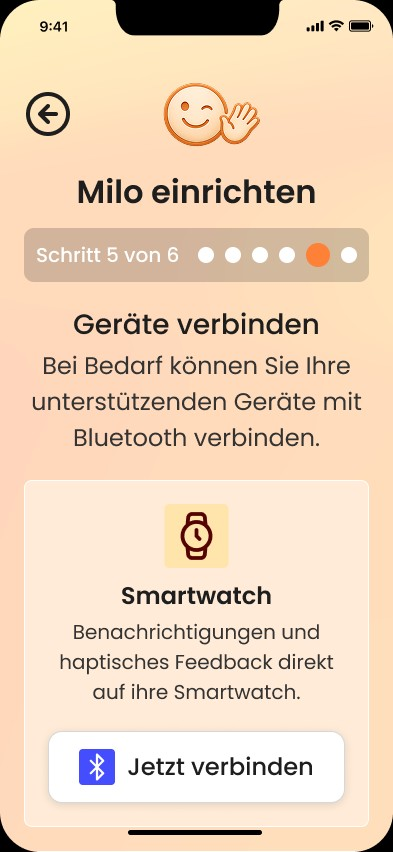
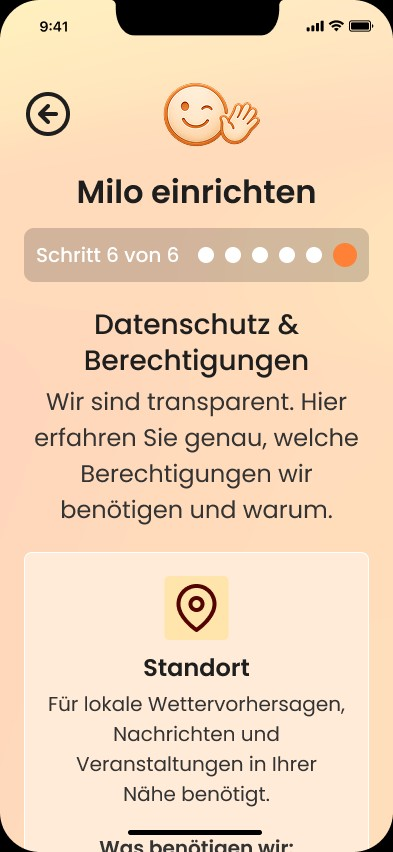
Nicht jede Person kann oder will tippen. Im Onboarding wählen Nutzende deshalb zwischen Text, Sprache und Touch, und das Eingabefeld passt sich der Wahl an.
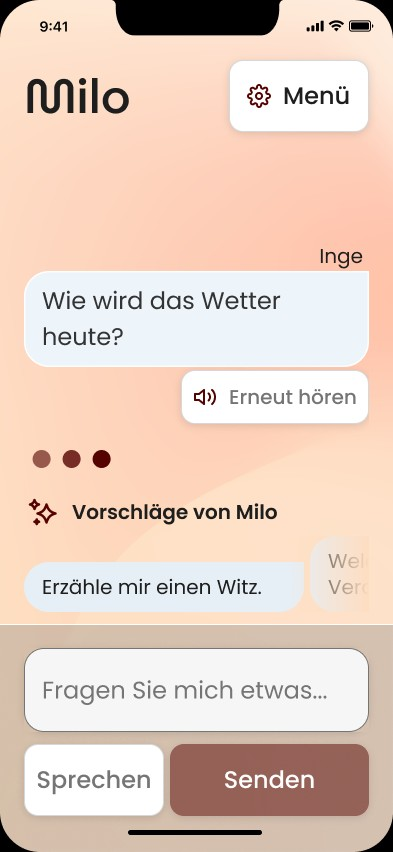
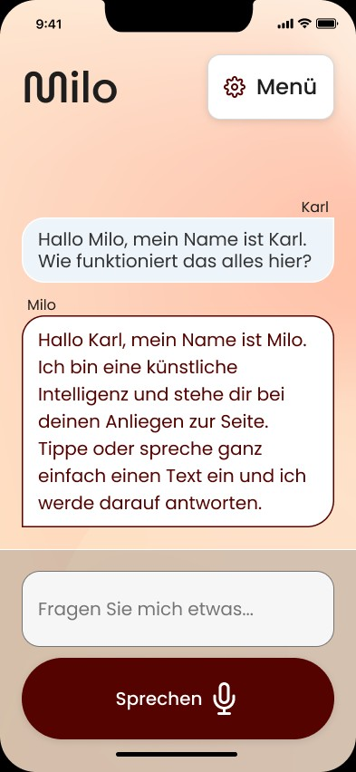
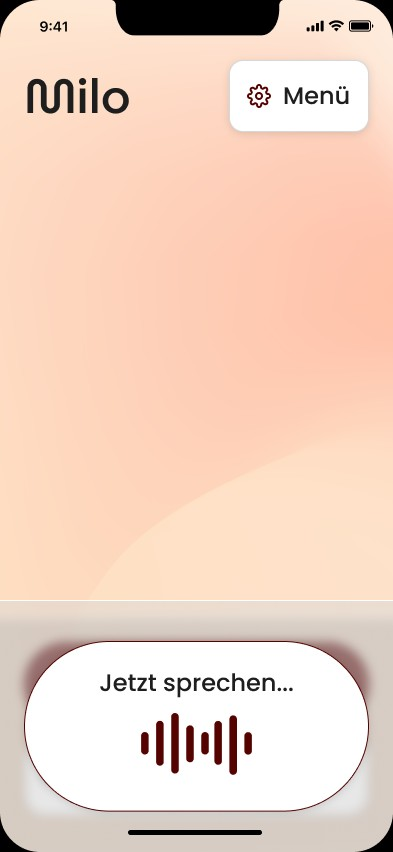
Nachrichten gehen erst nach bewusstem Senden hinaus. Die Sprachausgabe ordnet das Gesagte ein („Milo sagt …“), und ein Anruf-Modus wurde bewusst verworfen, weil er für die Zielgruppe schwer nachvollziehbar gewesen wäre.
Wie wird das Wetter morgen?
Wie wird das Wetter morgen?
Wie wird das Wetter morgen?
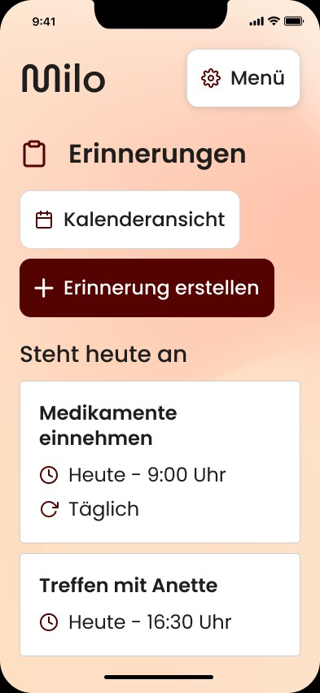
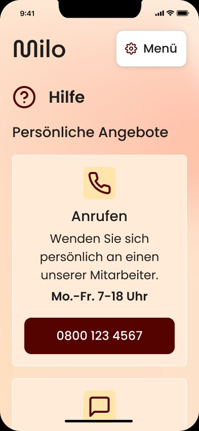
Vor dem Löschen oder Abbrechen fragt Milo nach, und nach jeder Aktion bestätigt ein kurzer Hinweis den Erfolg. Ein falscher Tipp hat so nie ernste Folgen.
Erinnerungen, etwa an Medikamente, entstehen im Gespräch oder von Hand und erscheinen als Liste oder im vertrauten Kalender. Der Hilfebereich stellt Telefon, Chat und E-Mail zu echten Menschen an den Anfang.
Fünf Personen zwischen 59 und 74 Jahren testeten den Prototyp vor Ort am Smartphone, weitgehend ohne Moderation. Zehn Aufgaben und Fragen deckten die zentralen Bereiche ab.
„Es war sehr ruhig und gelassen.“
Testperson, 59
„Verständlich, nicht technisch.“
Testperson, 72
Danach wurden fehlerhafte Interaktionen und Overlays korrigiert und der Hintergrund zugunsten des Kontrasts angepasst. Da die Testpersonen die App nicht selbst gefunden hatten, lässt sich die Wirkung des Einstiegs auf die Entscheidung zur Nutzung nicht belegen.
Barrierefreiheit war hier keine Anforderung unter vielen, sondern die Grundlage jeder Entscheidung. Die Gestaltung musste aus der Situation der Menschen abgeleitet werden, nicht aus gewohnten Mustern oder eigenem Stil.
Lernplattform mit Augmented Reality
Cognify ist eine Lernplattform für Menschen, die sich aus Neugier neues Wissen aneignen möchten. Kompakte Kurse verbinden Texte, Videos und Quizze mit Augmented Reality: Über gedruckte Bildmarker erscheinen 3D-Modelle wie ein menschliches Herz oder das Kolosseum direkt auf dem Tisch. Gamification und Community-Funktionen sollen für langfristige Motivation sorgen.
Zu Beginn stand eine Recherche zu bestehenden Lernplattformen. Die meisten Angebote richten sich an Schule, Studium oder berufliche Weiterbildung und gliedern ihre Inhalte nach Fächern. Anwendungen mit Augmented Reality behandeln meist ein einzelnes Thema und sind überwiegend für Kinder gedacht. Für Erwachsene, die sich im Alltag aus Neugier mit neuen Themen beschäftigen möchten, fand sich kein passendes Angebot.
Vier Anwendungen wurden getestet und nach denselben Kriterien bewertet: Serlo, My Daily Input und Studyflix als thematisch breite Plattformen sowie WDR AR 1933-1945 als Beispiel für Wissensvermittlung mit AR.
| Kriterium | Serlo | My Daily Input | Studyflix |
|---|---|---|---|
| Design und Ästhetik | 4 | 4,5 | 3,5 |
| Nutzerfreundlichkeit | 4 | 3,5 | 4 |
| Personalisierung | 2 | 5 | 4 |
| Barrierefreiheit | 2 | 1 | 3 |
| Inhaltsqualität und -umfang | 3,5 | 4 | 3 |
| Funktionsumfang | 4 | 3,5 | 2 |
| Community | 4,5 | 0 | 0 |
Keine der Plattformen verbindet Personalisierung und Community, und bei der Barrierefreiheit erreichte keine mehr als 3 von 5 Punkten. Die AR-Anwendung überzeugte bei der Wissensvermittlung, scheiterte aber an der Bedienbarkeit.
Eine Online-Umfrage mit 20 Teilnehmenden lieferte Daten zu Lerngewohnheiten, Erwartungen an Lernplattformen und zur Haltung gegenüber Augmented Reality.
Die Haltung zu Augmented Reality war gespalten. Wer eine Idee für den Einsatz hatte, dachte fast immer an die Veranschaulichung komplexer Inhalte wie Organe, physikalische Vorgänge oder technische Objekte.
„Mit visueller Darstellung lernt man oft nicht nur auswendig, sondern versteht es wirklich.“
Antwort aus der Umfrage
Aus den Ergebnissen entstanden drei Personas. Anna Schmidt, Grundschullehrerin und Mutter, sucht Lernangebote für Unterricht und Familie. Michael Hoffmann, 45 und Steuerberater, möchte Geschichte, Kunst und Philosophie erkunden, hat aber wenig Zeit. Nicole Lechner, 23 und Marketingassistentin, hat viel Freizeit, findet aber schwer die Motivation für sinnvolle Beschäftigungen. Sie verkörpert das häufigste Problem aus der Umfrage.
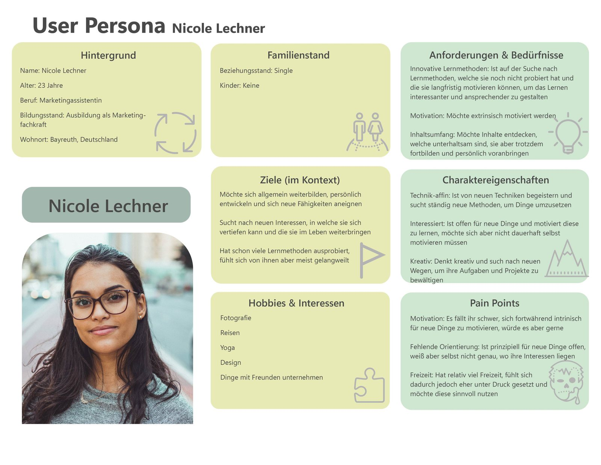
Die User Journey Map zeigt Nicoles Weg von der Langeweile im Alltag bis zur festen Lernroutine. Entscheidend sind der erste Eindruck, der sie zum Ausprobieren bringt, und die Abwechslung, die sie danach dranbleiben lässt.
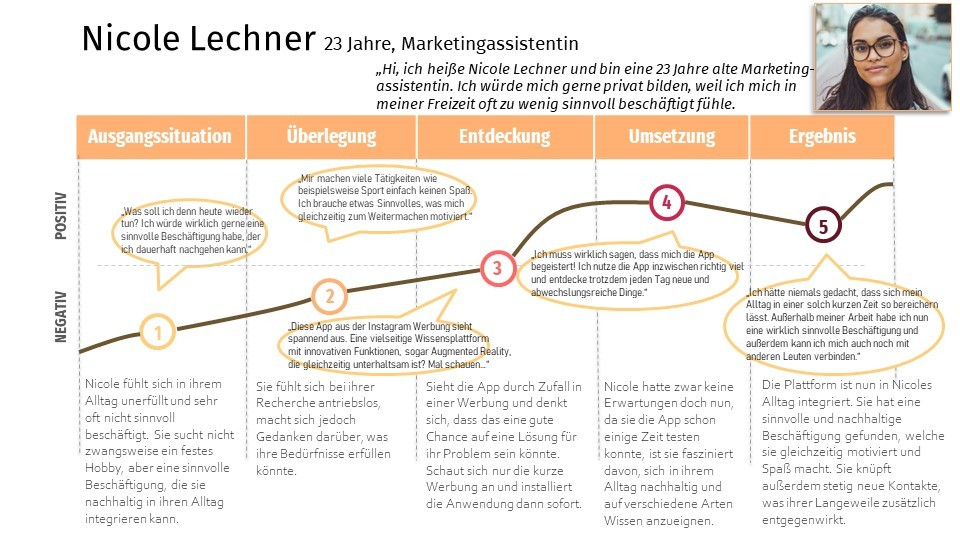
Die Erkenntnisse wurden in einem Leitsatz verdichtet, an dem sich die weitere Gestaltung ausrichtete:
Nutzende einer Lernanwendung mit Augmented Reality legen Wert auf intuitive Bedienung, eine ansprechende Oberfläche und vielfältige interaktive Funktionen. Die Anwendung soll flexibel nutzbar sein und hochwertige Inhalte bieten.
Kompakte Kurse zu einem Thema bilden den Kern. Texte, Darstellungen, Videos, Aufgaben und AR-Modelle lassen sich je nach Vorliebe kombinieren, ohne dass sich der Informationsumfang ändert.
Erfahrungspunkte, Level, Erfolge und Meilensteine machen Fortschritt sichtbar und setzen regelmäßige Impulse gegen nachlassende Motivation.
Freundesliste, Ranglisten, Forum und Gruppen sollen durch Gemeinschaft und leichten Wettbewerb zusätzlich motivieren.
60 % der Befragten hielten Community für unwichtig. Weil Motivation aber das häufigste Problem war, blieb sie Teil des Konzepts, zurückhaltend eingebunden: Profile zeigen Interessen, Level und Erfolge, aber nicht den Umfang eines sozialen Netzwerks.
Die Lo-Fi-Wireframes dienten dazu, Ideen früh auszuprobieren und die Struktur festzulegen. Zwei Prinzipien zogen sich durch den gesamten Prozess: Nutzende nicht mit Informationen überfordern und trotzdem ein einladendes Erscheinungsbild schaffen, das nicht nach reinem Nachschlagewerk wirkt.
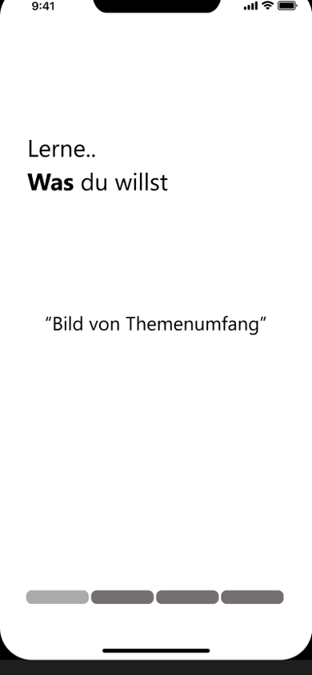
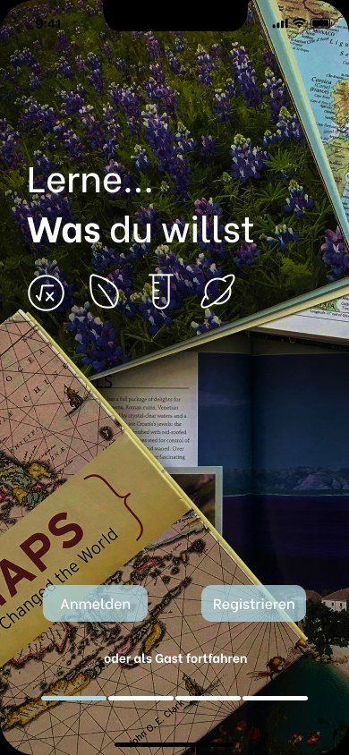
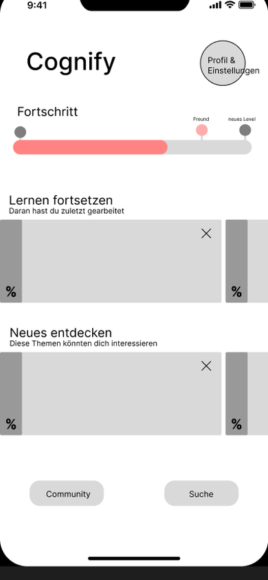
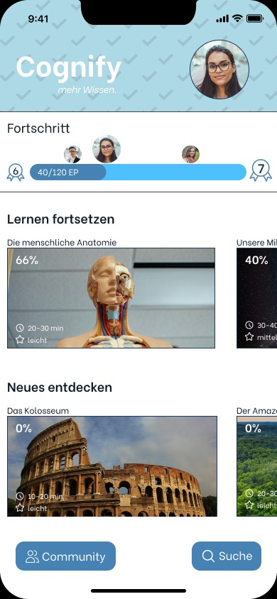
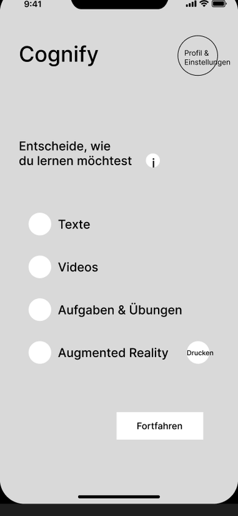
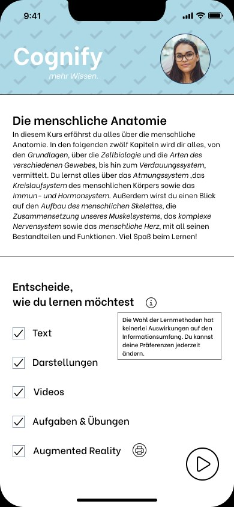
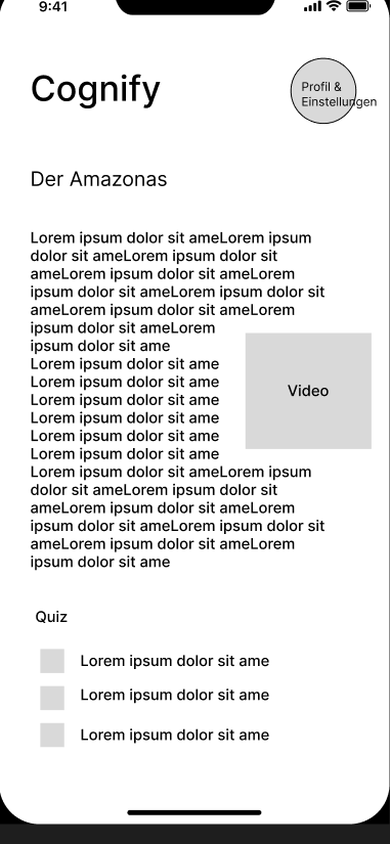
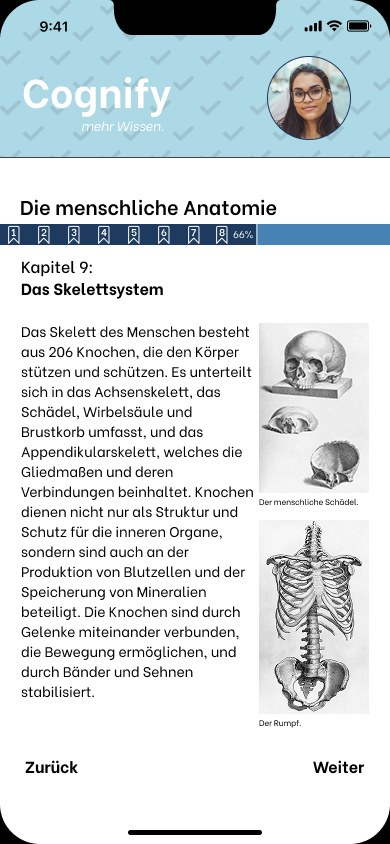
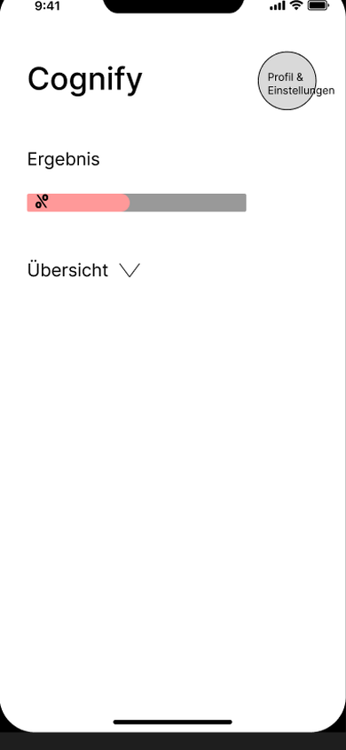
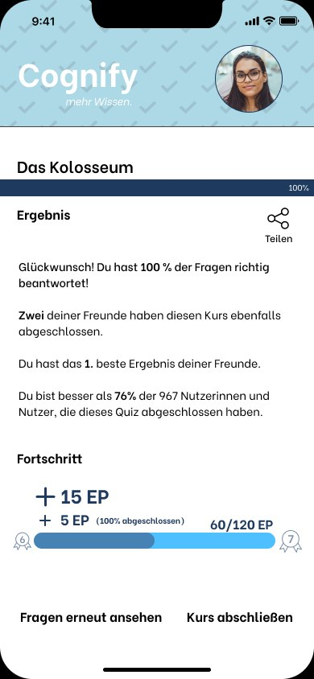
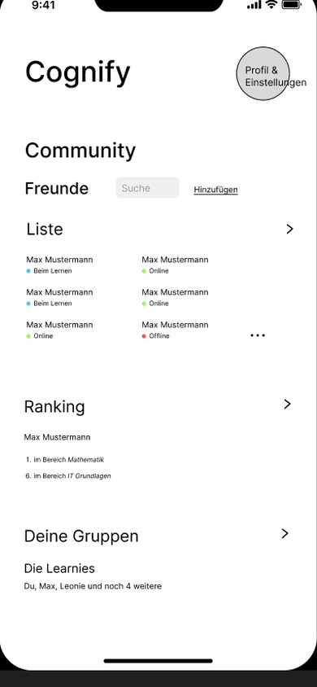
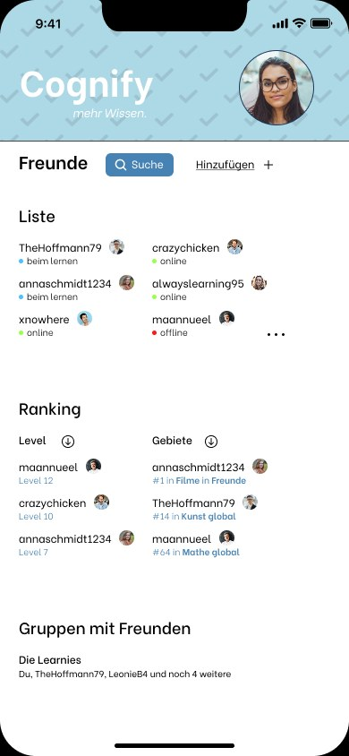
Die Startseite bündelt, was für den Lernalltag zählt: die Fortschrittsleiste mit Level und Erfahrungspunkten im Vergleich zu Freunden, darunter die Listen „Lernen fortsetzen“ und „Neues entdecken“. Zwei feste Buttons führen zur Community und zur Suche.
Die AR-Funktion wurde nicht nur gestaltet, sondern als eigene Android-App mit Unity und der Vuforia Engine umgesetzt. Zu den Kursen „Die menschliche Anatomie“ und „Das Kolosseum“ gehört je eine Druckvorlage mit Bildmarker. Erkennt die Kamera den Marker, erscheint das passende 3D-Modell auf dem Blatt und lässt sich durch Bewegen des Geräts von allen Seiten betrachten.
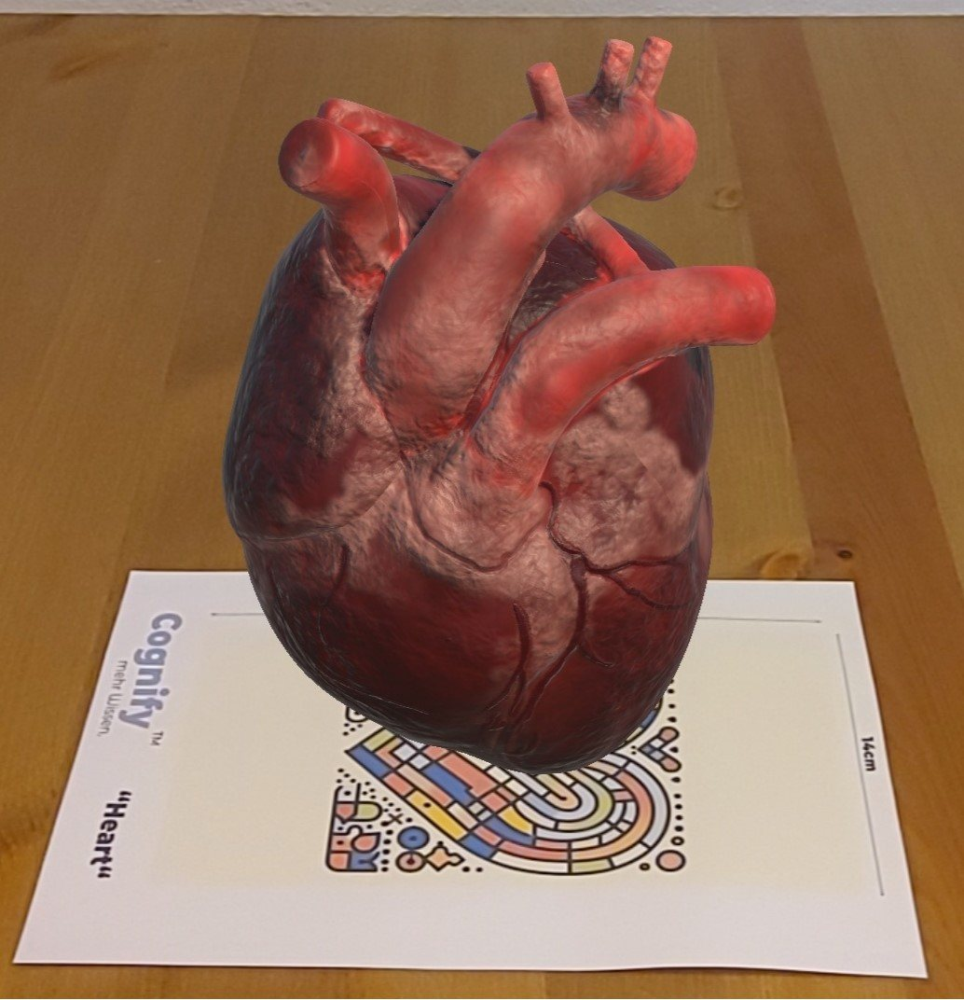
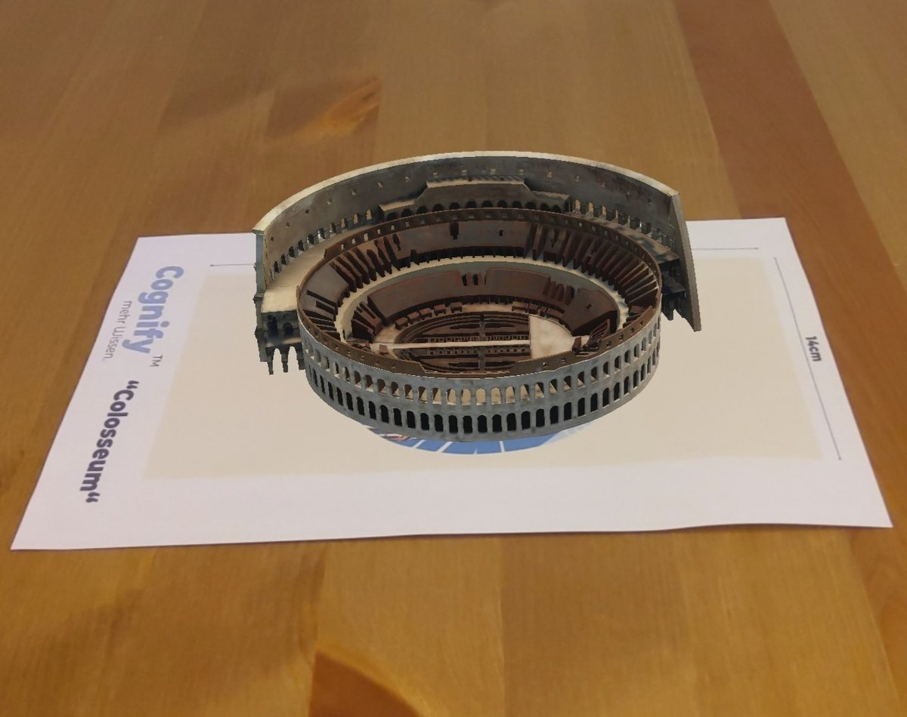
Im Interface ist AR eine von fünf Lernmethoden, die sich in der Kursvorschau aktivieren lässt; ein Druckersymbol führt dort zur Vorlage. Im Kurs weist ein Symbol am Ende des passenden Abschnitts auf das Modell hin.
Nach Jakob’s Law erwarten Nutzende, dass eine App so funktioniert wie die Apps, die sie bereits kennen. Das Logo führt deshalb zurück zur Startseite, das Profilbild zu Konto und Einstellungen, die Suche liegt unten rechts.
Die Fortschrittsleiste zeigt Level, Erfahrungspunkte und die Profilbilder von Freunden. Nach jedem Quiz folgen Punktezuwachs, der Vergleich mit Freunden und die Einordnung unter allen Nutzenden.
Jeder Screen zeigt nur, was für den nächsten Schritt nötig ist. Profil, Einstellungen und Community sind bewusst schlicht gehalten, damit sich auch weniger technikaffine Menschen zurechtfinden.
In den Einstellungen lassen sich Schriftgröße, einfache Schrift, ein Modus für Farbenblindheit, Untertitel für Videos, ein Screenreader und ein Darkmode aktivieren.
Geplant waren eine quantitative Remote-Evaluation und drei moderierte Tests. Beim Versand des Prototyps zeigte sich, dass Figma von allen Testpersonen ein eigenes Konto verlangte; auch der Figma-Support fand keine Lösung. Statt die Evaluation zu verkleinern, wurde der qualitative Teil ausgebaut: sechs statt drei Testpersonen und zehn statt fünf Aufgaben.
Die Tests fanden vor Ort statt, mit dem Prototyp auf dem Smartphone sowie Tablet und Druckvorlagen für die AR-Funktion. Die sechs Teilnehmenden zwischen 22 und 65 Jahren unterschieden sich in Technikaffinität und AR-Erfahrung. Sie dachten während der Aufgaben laut, bewerteten jede Aufgabe nach ihrer Lösbarkeit und gaben zum Schluss im Gespräch Feedback.
Abschlussbewertung · Durchschnitt von 10 Punkten
Die abgeleiteten Verbesserungen konnten im Semester nicht mehr umgesetzt werden, weil das Projekt seinen geplanten Umfang auf mehreren Ebenen überschritten hatte, vom eigenen AR-Prototyp bis zur ausgeweiteten Evaluation.
Ein Alleinstellungsmerkmal wirkt nur, wenn es im Interface sichtbar ist. Die AR-Funktion war technisch gelöst, ging aber im Fließtext unter. Ebenso tragen vertraute Muster nur die Menschen, die sie kennen; alle anderen brauchen sichtbare Wegweiser.
Visualisierungssystem für die Pharmaproduktion
In meiner Bachelorarbeit in Zusammenarbeit mit Syntegon habe ich ein Visualisierungssystem konzipiert und als interaktiven Prototyp umgesetzt. Es führt Bedienende in der pharmazeutischen Produktion Schritt für Schritt durch manuelle Arbeitsschritte und sorgt dafür, dass Fehler keine Folgen haben.
Wie muss ein Visualisierungssystem konzipiert sein, damit es Bedienende bei manuellen Arbeitsschritten sicher führt und Fehler verhindert?
In der Pharmaproduktion gelten strenge regulatorische Anforderungen wie der EU-GMP-Leitfaden. Wo Menschen manuell eingreifen, können Verwechslungen weitreichende Folgen haben. Die Arbeit untersucht, wie Informationsarchitektur, Schrittführung und Rückmeldung in diesem Umfeld zusammenspielen müssen.
Regulatorischer Rahmen, menschliche Fehlerursachen und Grundprinzipien industrieller Bedienoberflächen
Drei leitfadengestützte Interviews mit Fachleuten aus Entwicklung, technischer Umsetzung und pharmazeutischer Regulatorik
Per qualitativer Inhaltsanalyse abgeleitet, getrennt nach System und Führung der Bedienenden
Interaktiver Hi-Fi-Prototyp in Figma, aufgebaut mit dem Designsystem des Unternehmens
Individuelle Fragen je Fachperson auf einer fünfstufigen Skala, dazu übergreifende Usability-Kriterien
Begriffe vereinheitlicht, einen Prüfschritt ergänzt und die Schrittführung nachgeschärft
Offenheit und eine möglichst freie Bedienung treten in diesem Umfeld zurück. Das System übernimmt die Verantwortung, die in sicherheitskritischen Abläufen nicht allein beim Menschen liegen kann.
Korrekt: kurze Bestätigung, dann folgt der nächste Schritt ohne weitere Eingabe
Abweichung: Der Prozess geht erst weiter, wenn der Schritt korrekt ausgeführt ist
Bedienende sehen immer genau den aktuellen Schritt und die Informationen, die sie dafür brauchen.
Ein Schritt gilt erst als erledigt, wenn das System ihn geprüft hat. Wo eine Prüfung möglich ist, entfallen manuelle Freigaben.
Jede Eingabe am Bildschirm ist eine Nebenaufgabe. Weniger Bestätigungen halten Hände und Aufmerksamkeit bei der eigentlichen Arbeit.
Das Designsystem des Unternehmens sorgt für ein einheitliches Erscheinungsbild und erleichtert die Orientierung.
Da reale Bedienende im Projektzeitraum nicht zur Verfügung standen, bewerteten die drei interviewten Fachleute den Prototyp. Sie verbinden Fachwissen mit Kenntnis der Anforderungen und gelten damit als besonders wirksame Prüfende. Zugleich wurden die abgeleiteten Anforderungen so mit denselben Personen rückgekoppelt.
Besonders positiv bewertet wurden Feedback und Systemreaktion sowie die Fail-safe-Wirkung. Die Evaluation deckte außerdem einen Schritt auf, der sich nur manuell bestätigen ließ. Er wurde so umgebaut, dass ihn ausschließlich eine Prüfung durch das System abschließt, und die Bestätigungsschaltflächen fielen weg.
Eine Expertenevaluation ersetzt keinen Test mit Endnutzenden. Das Konzept ist eine geprüfte Grundlage, auf der die weitere Entwicklung aufbauen kann.
Besonders wertvoll war die Arbeit an einem industriellen Produkt mit Menschen aus Mechanical Engineering, Pharma Engineering, UX und Forschung und Entwicklung. In diesem Umfeld zählt keine möglichst freie Bedienung, sondern verlässliche Führung. Gute Gestaltung heißt hier, Verantwortung vom Menschen auf das System zu verlagern.
Die Arbeit enthält vertrauliche Informationen des Unternehmens. Screens und projektspezifische Details werden deshalb nicht gezeigt.
UX Design in Kundenprojekten
Bei forwerts interactive arbeitete ich im UX-Team an Online-Shops, Kundenportalen und Websites für Konzerne aus der Telekommunikations- und Energiebranche.
Ausarbeitung von Screen-Designs nach den Vorgaben der jeweiligen Kundenprojekte.
Ideenfindung für Funnel-Flows und Funktionen, grafisch ausgearbeitet und mit Textvorschlägen.
Aufbau einer Designstruktur für Bereiche des Kunden-Centers.
Analyse und Neukonzeption von Webseitenstrukturen.
Icons, Infografiken und Badges für Online-Shop und Kunden-Center.
Aufbereitung von Screen-Designs und Flows für Kundenworkshops.
Bestellprozess und Zubehör


Seiten und Unterseiten


Webseitenstruktur und Seitenaufbau